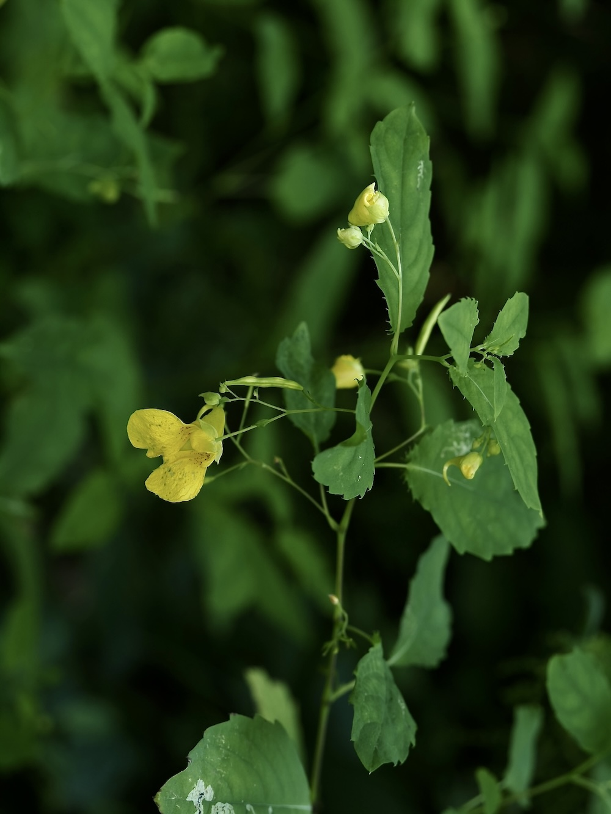
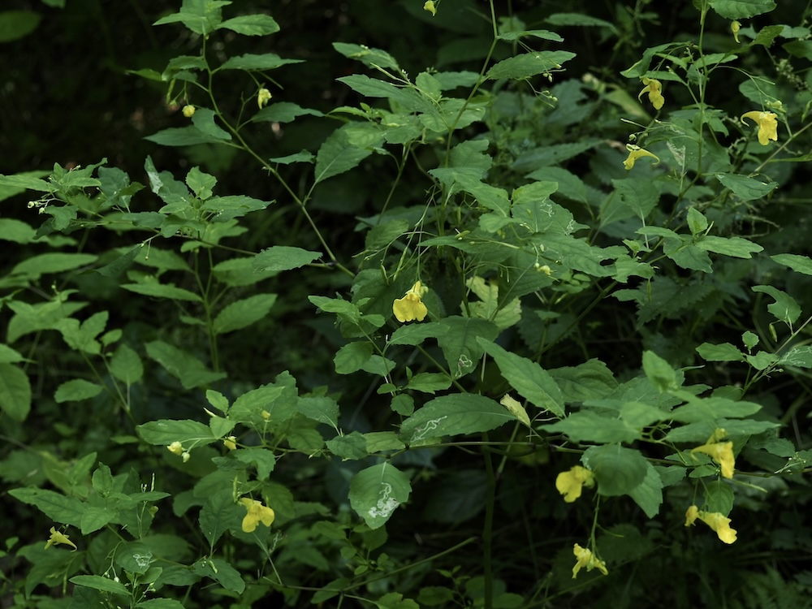

Das einzig heimische Springkraut — Hummel-Hotel im Halbschatten.



„Rühr-mich-nicht-an“
Der Artname „noli-tangere“ bedeutet wörtlich „rühr-mich-nicht-an“ — und das ist eine Warnung mit Augenzwinkern. Die reifen Fruchtkapseln spritzen bei der leisesten Berührung explosionsartig auf und schleudern Samen meterweit durch den Wald. Wer im Spätsommer durch einen Buchenwald wandert, kann diese kleine Pflanzen-Explosion mit dem Finger auslösen — das macht eindeutig Spaß.
Die letzte heimische Impatiens
Während die invasiven Impatiens-Arten (Drüsiges, Kleinblütiges) sich überall ausbreiten, ist das Große Springkraut die EINZIGE heimische Art. Es ist auf alte, naturnahe Buchenwälder angewiesen — ein wertvoller Indikator für intakte Waldökosysteme. Wenn du es findest, hast du einen Wald gefunden, der nicht zu Tode bewirtschaftet wurde.
Wissenswertes & Merksätze
Erkennen leicht gemacht
Hellgrüner, schwacher, durchscheinender Stängel mit Knoten, die wie kleine Verdickungen aussehen. Wechselständige Blätter, lanzettlich, am Rand grob gezähnt. Goldgelbe, hängende Blüten mit deutlichem nach hinten gebogenem Sporn.
Schattenspezialistin
Anders als die invasiven Verwandten bevorzugt I. noli-tangere echtes Halbdunkel im Wald — feucht-schattig, oft in Hangmulden oder an Bachläufen. Sie verschwindet rasch, wenn der Wald zu licht oder zu trocken wird.